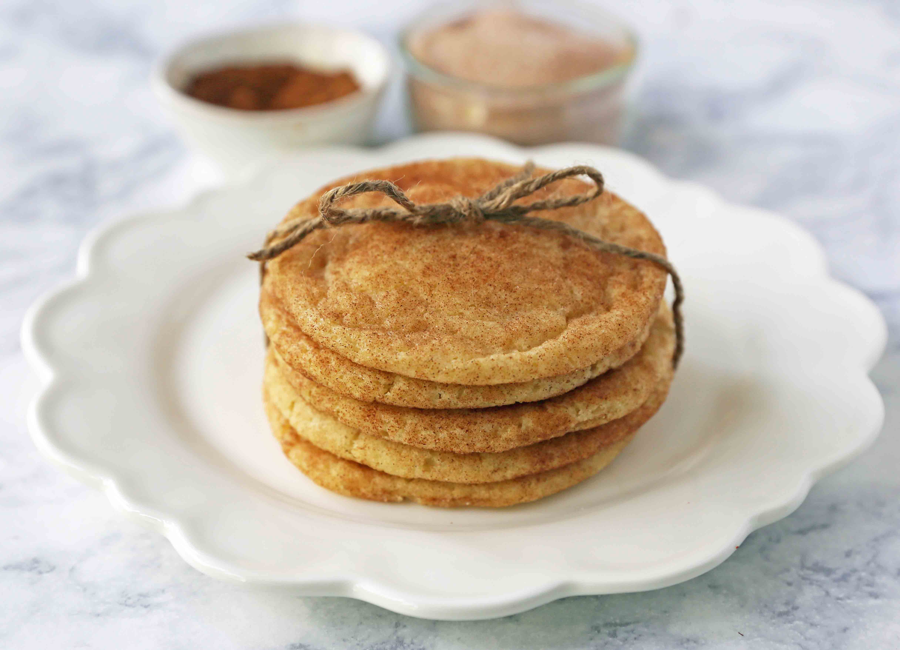

Snickerdoodle

Soft and Chewy Christmas Cookies
The popular cinnamon-sugar soft and chewy sugar cookie recipe. A recipe that has been in the family for over 30 years!
This was one of the first cookie recipes I made as a kid. As I have shared before, I was fully obsessed with cookbooks as a little girl. My Mom collected church cookbooks and I would go straight to the cookie recipes and beg my Mom to let me whip up a batch. I made this snickerdoodle cookie recipe 30 years ago and it is still the best I have ever tasted.
Ingredients
- Unsalted butter
- Sugar
- Eggs
- Vanilla
- Flour
- Cream of tartar
- Baking soda
- Salt
- Cinnamon
Steps
- Preheat oven to 350 degrees.
- In a large mixing bowl, cream butter and sugar for 4-5 minutes until light and fluffy. Scrape the sides of the bowl and add the eggs and vanilla. Cream for 1-2 minutes longer.
- Stir in flour, cream of tartar, baking soda, and salt, just until combined.
- In a small bowl, stir together sugar and cinnamon.
- If time allows, wrap the dough and let refrigerate for 20-30 minutes. Roll into small balls until round and smooth.
- Drop the dough balls into the cinnamon-sugar mixture and coat well. Using a spoon, coat for a second time, ensuring the cookie balls are completely covered.
- Place on a parchment paper-lined baking sheet. Bake for 9-11 minutes. Let cool for several minutes on baking sheet before removing from the pan.
Link to original recipe